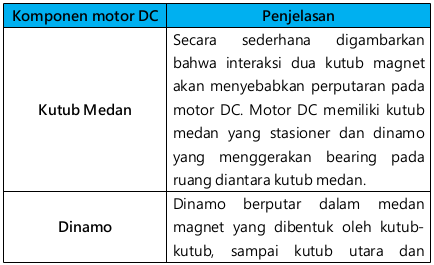
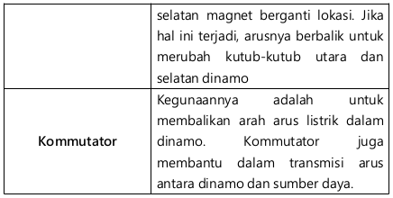

JENIS-JENIS MOTOR LISTRIK
Tipe atau jenis motor listrik yang ada saat ini beraneka ragam jenis dan tipenya. Semua jenis motor listrik yang ada memiliki 2 bagian utama yaitu stator dan rotor. Stator adalah bagian motor listrik yang diam dan rotor adalah bagian motor listrik yang bergerak (berputar). Berikut ini merupakan bagan tentang jenis motor listrik.

Pada dasarnya motor listrik dibedakan dari jenis sumber tegangan kerja yang digunakan. Berdasarkan sumber tegangan kerjanya motor listrik dapat dibedakan menjadi dua jenis yaitu :
-
Motor listrik arus bolak-balik AC (Alternating Current)
Motor AC/arus bolak-balik menggunakan arus listrik yang membalikkan arahnya secara teratur pada rentang waktu tertentu. Kecepatan motor AC lebih sulit dikendalikan. Untuk mengatasi kerugian ini, motor AC dapat dilengkapi dengan penggerak frekuensi variabel untuk meningkatkan kendali kecepatan sekaligus menurunkan dayanya. Pada Umumnya motor AC dapat dibagi menjadi dua yaitu :-
Motor sinkron.
Motor sinkron adalah motor AC yang bekerja pada kecepatan tetap pada sistem frekuensi tertentu. Motor ini memerlukan arus searah (DC) untuk pembangkitan daya dan memiliki torsi awal yang rendah, dan oleh karena itu motor sinkron cocok untuk penggunaan awal dengan beban rendah, seperti kompresor udara, perubahan frekuensi dan generator motor. -
Motor induksi.
Motor AC Induksi (Motor Induksi)
Motor induksi merupakan motor yang paling umum digunakan pada berbagai peralatan industri. Popularitasnya karena rancangannya yang sederhana, murah dan mudah didapat, dan dapat langsung disambungkan ke sumber daya AC.

gambar motor AC induksi Komponen Utama Motor AC Induksi
Motor induksi memiliki dua komponen listrik utama :
-
Rotor, Motor induksi menggunakan dua jenis rotor :
- Rotor kandang tupai terdiri dari batang penghantar tebal yang dilekatkan dalam petak-petak slots paralel. Batang-batang tersebut diberi hubungan pendek pada kedua ujungnya dengan alat cincin hubungan pendek.
- Lingkaran rotor yang memiliki gulungan tiga fase, lapisan ganda dan terdistribusi. Dibuat melingkar sebanyak kutub stator. Tiga fase digulungi kawat pada bagian dalamnya dan ujung yang lainnya dihubungkan ke cincin kecil yang dipasang pada batang as dengan sikat yang menempel padanya.
- Stator, Stator dibuat dari sejumlah stampings dengan slots untuk membawa gulungan tiga fase. Gulungan ini dilingkarkan untuk sejumlah kutub yang tertentu. Gulungan diberi spasi geometri sebesar 120 derajat.
Motor induksi dapat diklasifikasikan menjadi dua kelompok utama :- Motor induksi satu fase. Motor ini hanya memiliki satu gulungan stator, beroperasi dengan pasokan daya satu fase, memiliki sebuah rotor kandang tupai, dan memerlukan sebuah alat untuk menghidupkan motornya. Sejauh ini motor ini merupakan jenis motor yang paling umum digunakan dalam peralatan rumah tangga, seperti fan angin, mesin cuci dan pengering pakaian, dan untuk penggunaan hingga 3 sampai 4 Hp.
- Motor induksi tiga fase. Medan magnet yang berputar dihasilkan oleh pasokan tiga fase yang seimbang. Motor tersebut memiliki kemampuan daya yang tinggi, dapat memiliki kandang tupai atau gulungan rotor (walaupun 90% memiliki rotor kandang tupai); dan penyalaan sendiri. Diperkirakan bahwa sekitar 70% motor di industri menggunakan jenis ini, sebagai contoh, pompa, kompresor, belt conveyor, jaringan listrik , dan grinder. Tersedia dalam ukuran 1/3 hingga ratusan Hp.
-
Rotor, Motor induksi menggunakan dua jenis rotor :
-
Motor sinkron.
-
Motor listrik arus searah DC (Direct Current)
Motor DC digunakan pada penggunaan khusus dimana diperlukan penyalaan torsi yang tinggi atau percepatan yang tetap untuk kisaran kecepatan yang luas.
Gambar Kerja Motor DC
Video Prinsip Motor DC Sebuah motor DC memiliki tiga komponen utama, yaitu :   Jenis-Jenis Motor DC/Arus Searah- Motor DC sumber daya terpisah/ Separately Excited, Jika arus medan dipasok dari sumber terpisah maka disebut motor DC sumber daya terpisah/separately excited.
-
Motor DC sumber daya sendiri/ Self Excited, Pada jenis motor DC sumber daya sendiri di bagi menjadi 3 tipe sebagi berikut :
-
Motor DC Tipe Shunt
Pada motor shunt, gulungan medan (medan shunt) disambungkan secara paralel dengan gulungan dinamo (A). Oleh karena itu total arus dalam jalur merupakan penjumlahan arus medan dan arus dinamo.
Karakter kecepatan motor DC tipe shunt adalah :- Kecepatan pada prakteknya konstan tidak tergantung pada beban (hingga torque tertentu setelah kecepatannya berkurang) dan oleh karena itu cocok untuk penggunaan komersial dengan beban awal yang rendah, seperti peralatan mesin.
- Kecepatan dapat dikendalikan dengan cara memasang tahanan dalam susunan seri dengan dinamo (kecepatan berkurang) atau dengan memasang tahanan pada arus medan (kecepatan bertambah).
-
Motor DC Tipe Seri
Dalam motor seri, gulungan medan (medan shunt) dihubungkan secara seri dengan gulungan dinamo (A). Oleh karena itu, arus medan sama dengan arus dinamo. Karakter kecepatan dari motor DC tipe seri adalah :- Kecepatan dibatasi pada 5000 RPM
- Harus dihindarkan menjalankan motor seri tanpa ada beban sebab motor akan mempercepat tanpa terkendali.
-
Motor DC Tipe Kompon/Gabungan
Motor Kompon DC merupakan gabungan motor seri dan shunt. Pada motor kompon, gulungan medan (medan shunt) dihubungkan secara paralel dan seri dengan gulungan dinamo (A). Sehingga, motor kompon memiliki torque penyalaan awal yang bagus dan kecepatan yang stabil.
Karakter dari motor DC tipe kompon/gabungan ini adalah, makin tinggi persentase penggabungan (yakni persentase gulungan medan yang dihubungkan secara seri), makin tinggi pula torque penyalaan awal yang dapat ditangani oleh motor ini.
-
Motor DC Tipe Shunt